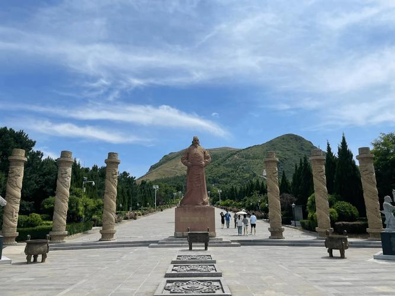

-

明十三陵长陵定陵昭陵介绍
明十三陵在北京西北郊，是明朝帝王陵墓。長陵是永樂皇帝陵，定陵是成祖陵，昭陵是景泰皇帝陵。展現明代歷史建築，石獅、神道等凸顯宮廷文化。探訪感受中國古代帝王風采。
明十三陵不僅是明朝皇帝的安息之地，更是歷史的瑰寶，見證了明朝的輝煌與衰落。
每一座陵墓都承載著豐富的歷史文化信息，體現了中國古代皇家陵寢建築的獨特風格和精湛工藝。
北京明十三陵，位於北京市昌平區，是明朝多位皇帝的陵墓所在地。整個陵區占地廣闊，埋藏著豐富的歷史文化。
明十三陵不僅是明朝皇帝的安息之地，更是歷史的瑰寶，見證了明朝的輝煌與衰落。
每一座陵墓都承載著豐富的歷史文化信息，體現了中國古代皇家陵寢建築的獨特風格和精湛工藝。
明十三陵在北京西北郊，是明朝帝王陵墓。長陵是永樂皇帝陵，定陵是成祖陵，昭陵是景泰皇帝陵。展現明代歷史建築，石獅、神道等凸顯宮廷文化。探訪感受中國古代帝王風采。
明十三陵冬日雪景如詩如畫。古墓在潔白雪中顯得更加莊嚴肅穆，石獅、神道在雪中閃耀，宛如仙境。探訪時，雪景賦予古墓新的神秘與寧靜氛圍。
夏日的明十三陵神道景色如畫，翠綠樹木蔥郁，傳統建築紅頂門樓屹立中央。清幽寧靜的景致，彷彿置身古代帝王的莊嚴世界，令人心曠神怡。
踏入長陵城門入口，古老城門雕樑畫棟，氣勢非凡。石獅護衛，神秘氛圍籠罩，仿佛踏入明朝帝王的莊嚴殿堂，引人遨遊歷史長河。
昌平十三陵皇陵蘊含著龍脈傳說，環抱靈谷寶穴。遊覽其中，彷彿踏入神秘能量場，感受古代帝王與龍脈交匯的神奇。
北京明陵是明朝皇帝的陵墓群，坐落在北京市昌平區。這里以其宏偉的建築和精美的雕刻聞名，是中國古代皇家陵墓的典範。陵區包括明孝陵、明成祖陵等多個陵墓，展現了明朝的輝煌歷史和精湛工藝。